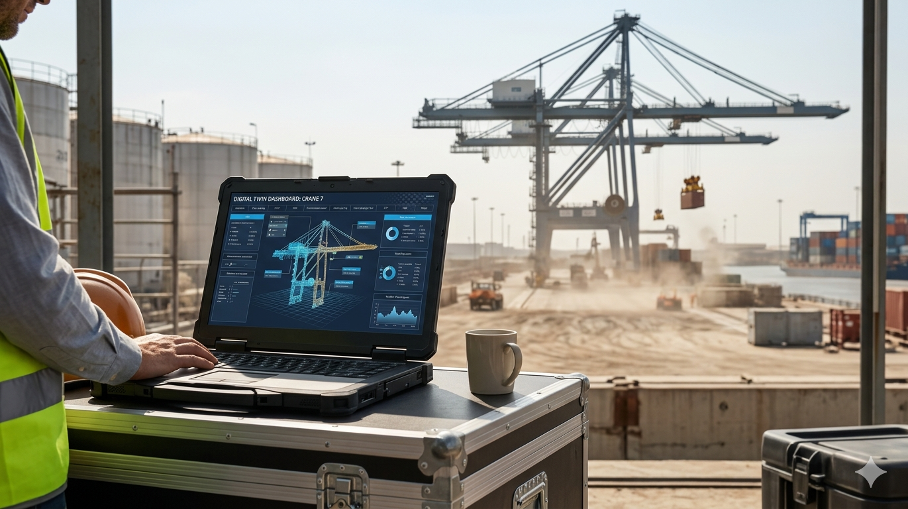

The Digital Twin: The Frontier of Operational Savings in Heavy Machinery and Industrial Plants

Figure 1: Visualizing the Digital Twin of a container crane.
Executive Summary
- Decision-Making: Relying on AI without understanding its bias is the leading cause of corporate strategic drift in 2026.
- Cyber-Resilience: Cybersecurity is no longer an IT issue; it is a fiduciary responsibility of the board.
- Algorithmic Intuition: Leaders must develop the ability to question the "black box" of automated systems to avoid systemic risks.
In the industrial landscape of 2026, efficiency is no longer a goal; it is a requirement for survival. As global energy and maintenance costs fluctuate, high-level management is turning toward one of the most transformative tools of the decade: the Digital Twin. This technology creates a high-fidelity virtual bridge between physical assets and digital intelligence.
What is a Digital Twin?
A Digital Twin is not just a 3D model. It is a dynamic, data-driven replica of a physical asset—such as a turbine, a heavy-duty mining truck, or an entire processing plant—that evolves in real-time. By integrating IoT (Internet of Things) sensors, these replicas allow engineers to monitor performance, simulate "what-if" scenarios, and identify structural fatigue before a catastrophic failure occurs.
Predictive Maintenance: The Economic Impact. Traditional maintenance is reactive or scheduled by the clock. Digital Twins shift the paradigm to predictive maintenance. For a heavy machinery fleet, this means reducing unplanned downtime by up to 30% and extending the operational life of assets by nearly 20%, directly impacting the company's EBITDA.
Simulation vs. Reality
The true value of a Digital Twin lies in its ability to simulate extreme conditions without risking physical hardware. In sectors like oil and gas or large-scale manufacturing, running a stress test on a virtual twin can save millions of dollars in potential damage. By identifying bottlenecks in the digital environment, plant managers can optimize throughput and energy consumption before implementing changes on the factory floor.
Strategic Implementation for CEOs
At Global Capital Insights, we emphasize that implementing Digital Twins is a capital allocation decision. It requires a robust digital infrastructure and a workforce capable of interpreting complex data streams. However, the return on investment (ROI) is clear: lower operational costs, optimized supply chains, and a significant reduction in the carbon footprint through energy efficiency.
The industrial leaders of 2026 are no longer managing machines; they are managing data ecosystems. The Digital Twin is the central nervous system of this new industrial era, turning uncertainty into actionable precision.